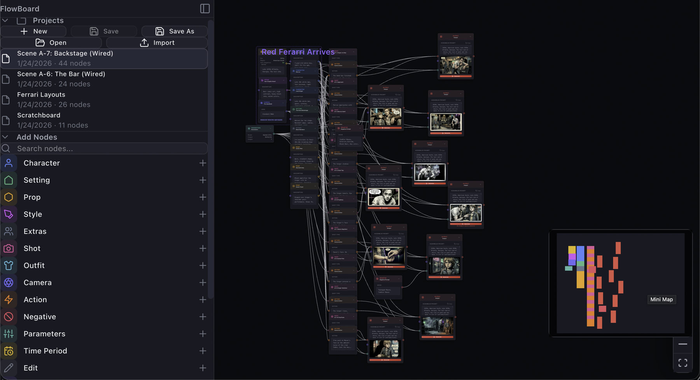

FlowBoard's Desktop App Becomes a Real Local Workspace
Recent desktop work makes FlowBoard behave less like a wrapped web app and more like a usable local tool, with native project open/save flows, script file I/O, and working asset downloads.

FlowBoard's desktop app now clears an important usability bar: it can behave like a real local workspace instead of a browser build trapped inside a desktop shell. The committed changes across the desktop bridge focus on a simple product promise: if a user opens a project, edits supporting text, or exports an output, those actions should work with native file behavior instead of relying on browser APIs that are missing or unreliable in the desktop webview.
Projects can open, save, and save as native files
The core improvement is in the desktop file workflow. client/src/services/fileSystem.ts now branches to Tauri-native dialogs and Rust-backed reads and writes when FlowBoard runs as a desktop app. That keeps the existing store logic intact while adding a path-based handle shim for desktop mode. The same layer also accepts both the newer .flw format and legacy .flowboard.json files, which makes the desktop path useful for current work without abandoning older projects.
That sounds infrastructural, but it changes the product feel. Open, Save, and Save As are table-stakes behaviors for creative software. Once those actions map to native dialogs instead of browser-only file pickers, the desktop app becomes more credible as the place where ongoing FlowBoard work can actually live.
The script panel now fits the desktop model too
The same desktop pass extends to the Script Panel. In client/src/components/panels/ScriptPanel.tsx, markdown open/save now uses native dialogs and Rust I/O in Tauri mode, while preserving browser fallbacks for web users. That matters because the script panel is not just auxiliary text. It is part of how a FlowBoard project captures scene notes, structure, and graph-building context. If project files save cleanly but the writing surface does not, the desktop workflow still feels incomplete.
By giving script editing the same local-file treatment as projects, FlowBoard is moving toward a more coherent desktop posture: the graph and its supporting text can both live on disk and be managed with the same user expectations people bring to desktop tools.
Exports and downloads stop failing silently on desktop
A second practical gap was asset export. The committed desktop download helper in client/src/lib/downloadFile.ts addresses a platform-specific problem directly: WKWebView ignores anchor-tag downloads, which meant desktop download buttons could become no-ops. FlowBoard now routes image exports, page and comp PNG downloads, lightbox saves, and video downloads through a shared native save dialog path on desktop while keeping the usual browser behavior on the web.
This is a good product change because it treats export as a first-class action rather than an afterthought. A desktop app for image workflows has to let people keep the things they made. Once downloads work consistently for rendered images and derived assets, the desktop version becomes much closer to a dependable handoff point between graph work and the rest of a creator's local pipeline.
The bigger shift is local-first credibility
Taken together, these commits show a product direction that is broader than any one dialog box. FlowBoard is adapting its UX to the realities of desktop runtime boundaries instead of pretending the browser implementation can simply be embedded unchanged. Scene and FX nodes already expose backend choices more explicitly; this desktop work does the same for file ownership and export behavior.
The result is not just technical compatibility. It is a more believable local-first editing environment: projects open from disk, scripts save where users expect, and generated assets can be exported without webview-specific breakage. That is the kind of invisible product work that makes the rest of the toolchain easier to trust.